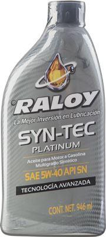

SYN-TEC PLATINUM SAE 0W-20 API SN/GF-5
Raloy Syn-Tec Platinum SAE 0W-20 es un aceite 100% sintético, diseñado para satisfacer la última generación de lubricantes Resource Conserving (RC), el cual excede en protección a los lubricantes de base mineral. Debido a su avanzada tecnología de aceites básicos sintéticos y su paquete de aditivos especial de alto rendimiento, ofrece una protección única a los motores a gasolina modernos, el cual se adhiere a los mecanismos con tal tenacidad, que no se desplaza en áreas de extrema presión, permaneciendo aun después de apagado el motor, asegurando una protección adecuada al momento del encendido
SYN-TEC PLATINUM SAE 5W-30 API SN/GF-5
Aceite 100% sintético, diseñado para satisfacer la última generación de lubricantes Resource Conserving (RC), el cual excede en protección a los lubricantes de base mineral. Debido a su avanzada tecnología de aceites básicos sintéticos y su paquete de aditivos especial de alto rendimiento, ofrece una protección única a los motores a gasolina modernos, el cual se adhiere a los mecanismos con tal tenacidad, que no se desplaza en áreas de extrema presión, permaneciendo aun después de apagado el motor, asegurando una protección adecuada al momento del encendido. La nueva tecnología que se ha incorporado en esta última generación de lubricantes permite cumplir y exceder los requerimientos de los fabricantes de equipo original (OEM).

SYN-TEC PLATINUM SAE 5W-40 API SN
Aceite 100% sintético que excede en funcionamiento a los aceites de base mineral, debido a su avanzada tecnología ofrece una protección única de lubricante que se adhiere a los mecanismos con tal tenacidad que no se desplaza en áreas donde hay presión extrema, permanece ahí aún después de que se ha apagado el motor, asegurando protección instantánea al momento del encendido. Recuerde que el mayor desgaste de los motores ocurre en el arranque por falta de lubricación inicial.

SYN-TEC PLATINUM SAE 5W-50 API SN
Aceite sintético que excede en funcionamiento a los aceites de base mineral, debido a su avanzada tecnología ofrece una protección única de lubricante que se adhiere a los mecanismos con tal tenacidad que no se desplaza en áreas donde hay presión extrema, permanece ahí aún después de que se ha apagado el motor, asegurando protección instantánea al momento del encendido. Recuerde que el mayor desgaste de los motores ocurre en el arranque por falta de lubricación inicial.
RACING TURBO MULTIGRADE
RACING TURBO SAE 10W-30 API SN
Raloy Racing Turbo SAE 10W-30 es un aceite multigrado mineral de la última generación de lubricantes Resource Conserving(RC). Debido a su avanzada tecnología de básicos minerales altamente refinados y seleccionados junto con aditivos de nueva tecnología, brindan un óptimo rendimiento en motores a gasolina de alto desempeño.

RACING TURBO SAE 15W-40 API SN
Raloy Racing Turbo SAE 15W-40 es un aceite multigrado mineral de la última generación de lubricantes. Debido a su avanzada tecnología de básicos altamente refinados junto con aditivos de última tecnología, brindan un óptimo rendimiento en motores de gasolina de alto desempeño.